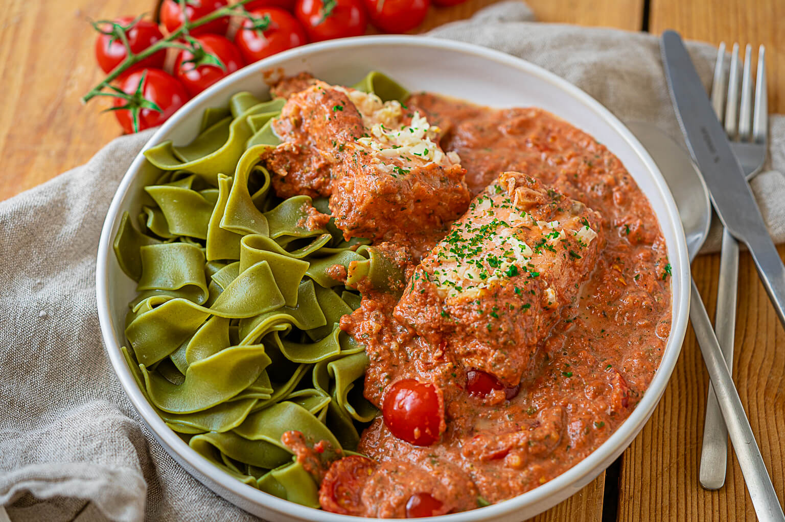

Baked Salmon

Description
This baked salmon recipe is a quick and easy dish featuring salmon fillets
cooked in a creamy tomato sauce. The preparation takes only 10 minutes,
and the oven does the rest, leaving you free to cook noodles or rice as a
side. The sauce combines ingredients like cream, tomatoes, onions, garlic,
and fresh herbs such as oregano, thyme, and parsley, creating a rich and
flavorful base. Cherry tomatoes add a fresh touch to the dish.
The salmon can be baked directly from frozen (with a slightly longer
cooking time) or thawed beforehand. Simply place the salmon in a baking
dish, cover it with the prepared sauce, and bake at 160°C (320°F) for
approximately 25 minutes. Serve it with pasta or rice for a complete meal
that's perfect for families, couples, or singles looking for a simple yet
delicious dinner.
Ingredients
- salmon fillet
- onion
- garlic cloves
- cream
- crushed tomatoes
- tomato paste
- vegetable broth
- water
- salt
- pepper
- oregano
- thyme
- parsley
- salmon seasoning (optional)
- tomato sauce seasoning (optional)
- cherry tomatoes
Steps
-
Defrost the salmon if desired. If using frozen salmon, increase the
cooking time slightly.
- Preheat the oven to 160°C (320°F) with convection.
- Place the salmon fillets into a baking dish.
- Finely chop the onion and garlic.
-
In a mixing bowl, combine cream, canned tomatoes, tomato paste,
vegetable broth, oregano, thyme, parsley, and optional
- spices. Stir until well mixed.
- Season the tomato sauce with salt and pepper to taste.
- Pour the tomato sauce over the salmon in the baking dish.
- Halve the cherry tomatoes and distribute them evenly in the dish.
- Bake the salmon in the oven for approximately 25 minutes.
-
While the salmon cooks, boil noodles or prepare rice as a side dish.
- Serve the baked salmon with the cooked noodles or rice.
Home